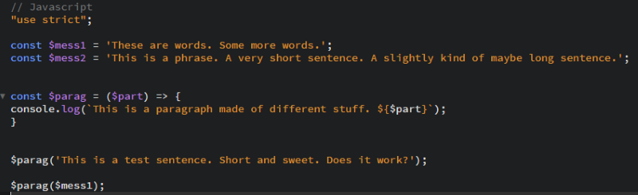
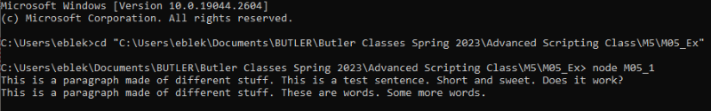
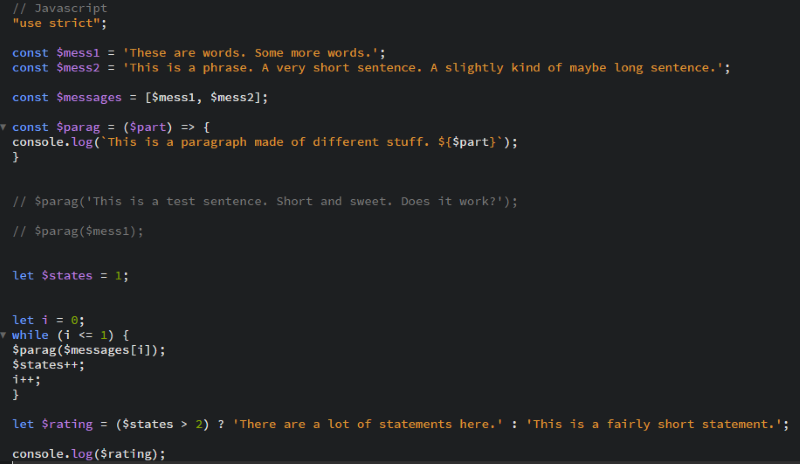
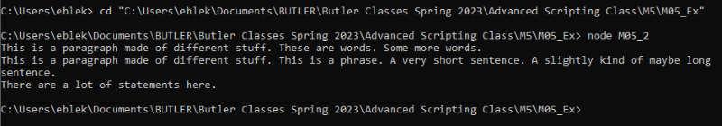
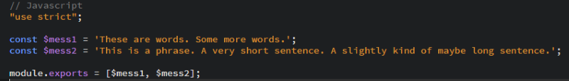
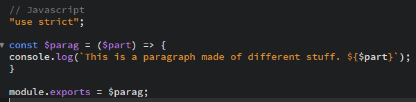
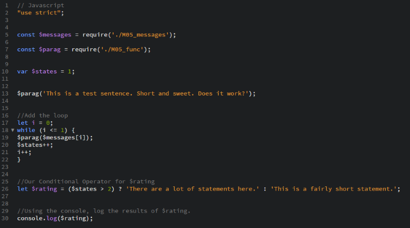
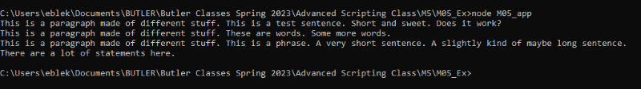

Scripting Exercise with Node.js
Node.js is a JavaScript runtime environment that can run scripts or other applications outside of a browser. It's a useful way to test script/code without creating a full webpage to run them. After installing Node.js writing a script, users can open the Command Prompt window to get started. Then, type "cd" (change directory) and drag the folder containing the script to be tested. Finally, type "node " followed by the file-name of the script. Node.js runs the script and displays any results in the Command Prompt window. We'll take a look some examples from this exercise below.
Version One
We made a short script called M05_Ex.js that uses a quick function and console.log to display various messages. At the bottom of the script, we call the function to write out a couple of those messages. The code for the script is displayed here.
Next, we ran the script using the Command Prompt window and Node.js as described at the beginning of this page. The below screenshot shows that the script successfully displayed the messages we told it to.
Version Two
In the second version, we added to our original variables and script. We stored each message (variable) in an array. We also created a variable called "$states" and set it to the number 1. We kept the same function from before, but we called it a different way. Specifically, we used a while-loop to call the function for each of our messages. The while loop also increases the number assigned to $states during each iteration. Finally, a conditional operator displays different messages based on how many statements there are. If the conditional statement in the parenthesis ($states > 2) is true, it returns the first message. If the conditional statement is false, the second message is returned. Finally, we use console.log to display whichever message was generated by the conditional operator.
Below, we see the result when the script is run in the Command Prompt window with Node.js.
Final Script(s)
In the final version, we actually created three separate scripts and combined them all together. First, we made a script called messages.js to contain our message-variables. The last line of code makes the file's contents exportable so it can be combined with the others.
The second script is called func.js and it holds our function that displays a message in the console-log. Again, the last line of code makes the script exportable.
Our final script is called app.js. It calls the function and uses a while loop to iterate through each message, then one of two statements based on the number of messages (just like Version Two). However, this script requires the contents of messages.js and func.js before the rest of the code, so that their contents can be used. This way, the scripts work the same way as Version Two, but the various aspects of the code are sorted into separate files.
Below, we see the result.
